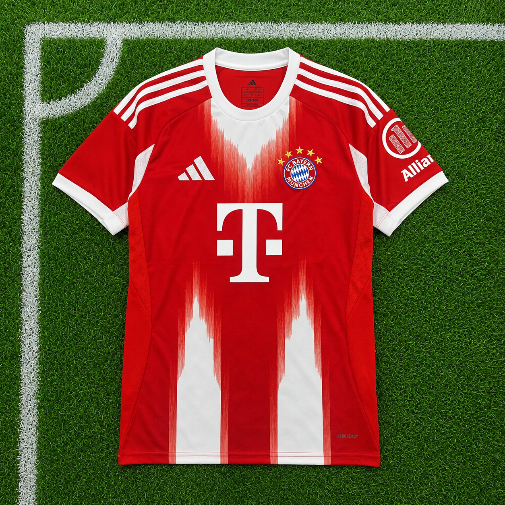

Primera equipación 2025/2026
La camiseta local del Bayern Múnich para la temporada 2025/2026 mantiene el tradicional color rojo que identifica al club, incorporando una interpretación moderna de su histórica identidad. El diseño está inspirado en la cultura y la tradición del Bayern, con el rojo como protagonista y detalles que resaltan el carácter del club.
La versión Authentic está diseñada para el rendimiento de los jugadores y combina una construcción ligera con tecnologías de adidas orientadas a proporcionar comodidad y ventilación durante la actividad deportiva. Su diseño mantiene la apariencia de la equipación utilizada por el primer equipo, ofreciendo un ajuste y una construcción pensados para el fútbol de alto nivel.
Características oficiales de la camiseta Bayern Munich local 25/26.